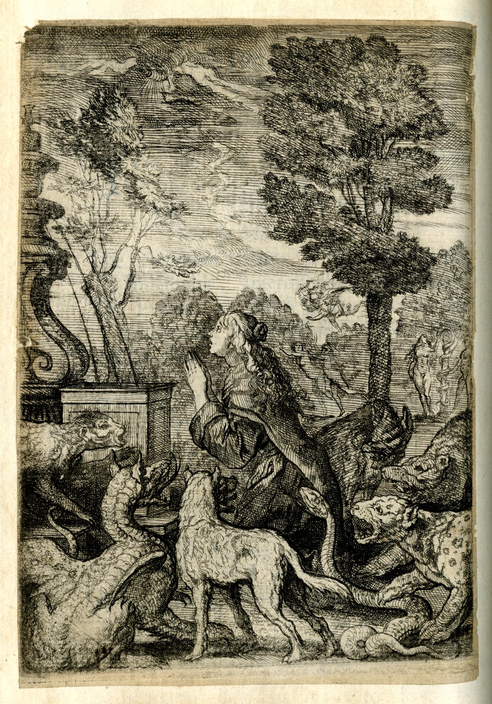

<div>
	<p><a href="https://www.britishmuseum.org/collection/object/P_1870-0709-19" target="_blank"></a>Finally, about fifty stanzas into the second canto, Theophila  enters the poem. She is “unhing’d with Fear, / Clamm’d with chill sweat” at her sinfulness. In the etching by Francis Barlow that accompanies this canto in many copies, seen here in a digital facsimile provided by the British Museum, Theophila kneels in prayer, “Besieg’d with deadly Sinnes” in the form of gnarling boars, tigers, and dragons. She weeps with shame and prostrates herself before God. In the text, Benlowes and the printer set apart her prayers in italics.</p>
</div>
